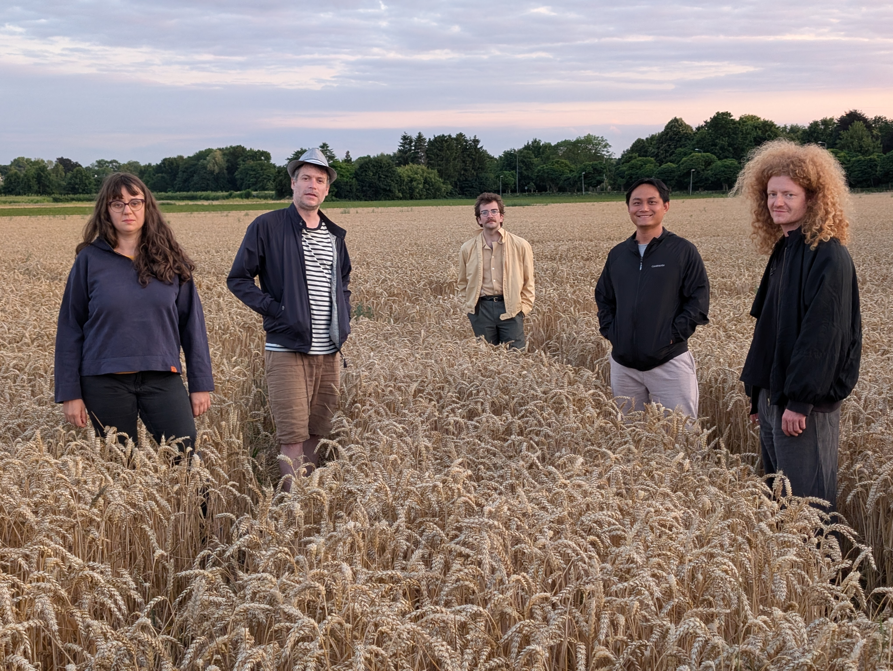

The Great Wave

6 Compositions for Modern Quintet
The Great Wave is an album by Mario Calzada emerging from the project Suite for Modern Quintet. The recording presents a set of open and modular compositions conceived as a contemporary suite, addressing current practices in new music and improvisation. Written material and structured improvisation coexist within a flexible formal framework. Within the suite, The Great Wave functions as an open solo for instrument, embedded in a broader musical architecture shaped collectively in performance. The suite was recorded by Francesca Fantini on Saxophone, Christoph Götzen on Electric Guitar, Ethan Blackburn on Piano, Phuc Nguyen on Electronics and Mario Calzada on Drums. Cofinanced by the Goverment of Navarra and published on No Busness Records.
The Great Wave
01 - MC - The Great Wave - Dutch Breeze
03 - MC - The Great Wave - Europe
Concept
Suite for modern quintet takes it name from the European tradition and reframes it to a Contemporary "New Music" style. It´s philosophy is rooted on improvisation, creativity and inclusivity
The Great Wave translates this philosophy into sound and gesture. The group set becomes both an instrument and a body in motion, where rhythm emerges from physical tension, instability, and release. Time is elastic, form is porous, and repetition functions as a ritual rather than a structure.
The work reflects on the relationship between discipline and freedom, echoing martial arts, Zen practice, and improvisation as embodied knowledge.
Downloads
Credits
Composition & performance:
Mario Calzada, Francesca Fantini, Christoph Götzen,
Ethan Blackburn, Phuc Nguyen
Duration: 40’
Premiere: Banka Studios Maastricht
Recording & mix: Droppa House (Recording) Mario Calzada (Mix)
